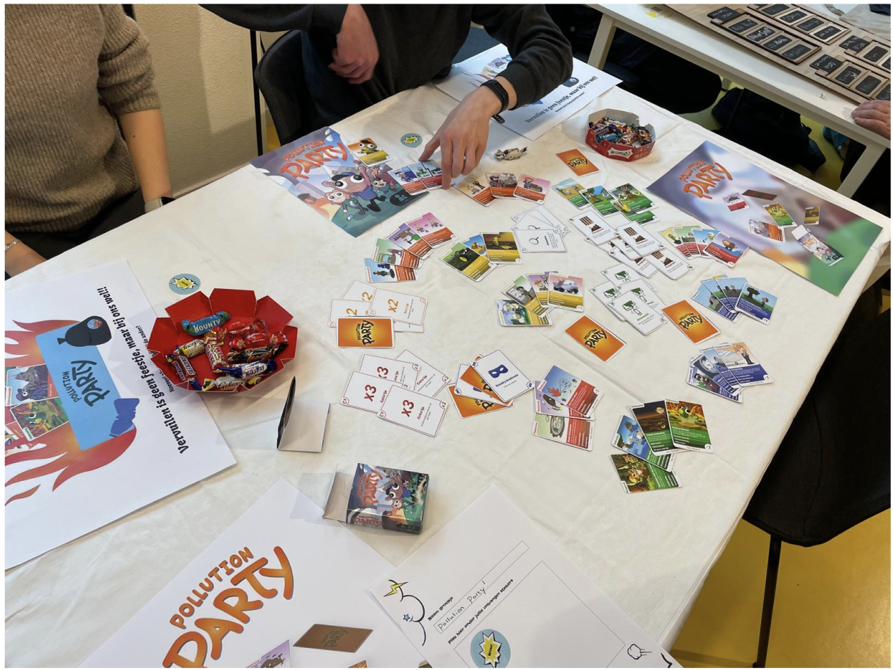
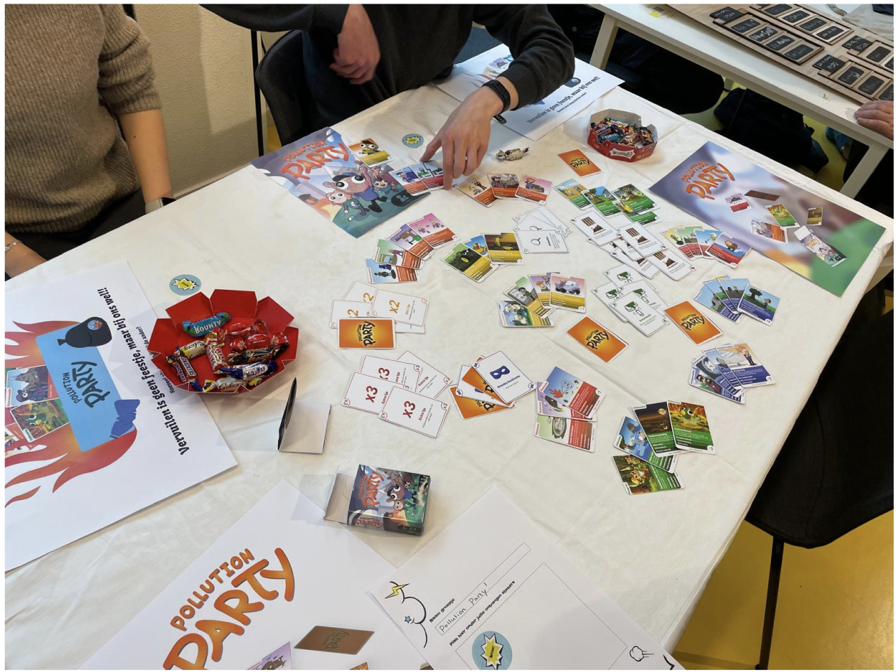

Information
My role: Visual designer
Group project, 4 persons
Duration: period of 3 weeks
Subject: Passion project, year 1 CMD

My role: Visual designer
Group project, 4 persons
Duration: period of 3 weeks
Subject: Passion project, year 1 CMD
Apart from the joint brainstorming sessions, my tasks were:
The assignment of this project was to create and design a product or experience that adds value to the world.
The goal of our group was to create a game that would make people aware of pollution and other ecological values.
Pollution party ended up being a card game where people are made aware of pollution. Operation of the game: It works like quartet, but have a whole series of pollution sets and cleanup sets. These are complementary to certain topics. Each set has its own plus or minus points, so you can give the other person a set that is polluting and they get minus points.
We made many iterations during the process, for example, we initially planned to make it a board game, only because we couldn't get the link between the cards and the board right we left out the board.
The project consisted of sprints. For example, week 1 consisted of preliminary research, week 2 prototype and testing, and week 3 completion
During this assignment we did a lot of preliminary research on what games are out there and what makes them so good. Because we wanted to make something that didn't exist yet. For that, we did a lot of brainstorming sessions.
Finally we had an idea only we also didn't quite figure out the game rules and how to combine the cards with the board game, so we had decided to switch to just a card game
We had first created low-fidelity maps so that we could start testing our concept
This showed that the whole scoring was still not correct, whether you had to put the cards on immediately, the name of the card set was not on it.
These were all crucial insights to make the game do run well.
Some sketches to clearly demonstrate the ideas I had for the maps to my groupmates.
Dit zijn de kaarten uit het spel die ik uiteindelijk heb geïllustreerd

Finally, we ended the whole project with a market where you could go and test your created product one last time.
 
